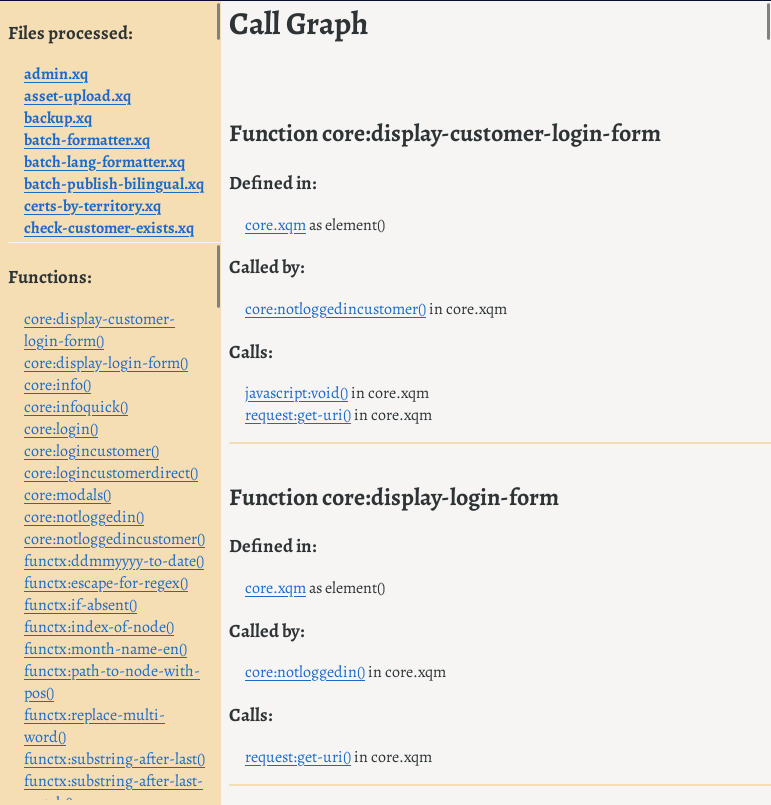

One of the difficulties of receiving a bunch of XSLT stylesheets or XQuery files is working out what calls what. Worse, if the files contain errors or might be unfinished, or might have pieces commented out, it can be hard to process them with XML tools. Another difficulty is working out where any particular function or template is defined.
Xarcissus is a tool in two parts. the first is a scanner written in Perl, that tries to do the best it can even when the input isn’t well-formed XML. The second is an XSLT stylesheet that takes the output of the scanner and makes a summary, in HTML. An earlier version also drew a dependency graph using the GraphViz library, but this turned out not to be useful in large projects, where the resulting diagram was too complex, and not to be needed in small projects.
Although Xarcissus is not currently distributed, it is freely available from the author on request. The reason for the restriction is that it’s really an internal Delightful Computing tool that gets hacked around based on what’s needed at any given time, rather than made into a product. For example, it can also produce Swagger (OpenAPI) files from comments in XQuery files.
Figure Figure 4, “FreqX Report for Attribute Values” shows output from Xarcissus on a moderately large XQuery project. It has found XQuery files that were referred to in HTML, in JavaScript, in XSLT, and in XQuery files. This run did not include any XSLT templates, but where those are found, their names and match patterns are recorded[45][45].
Figure 4. FreqX Report for Attribute Values
|  |
The point of Xarcissus is really that you can fairly easily write a tool that is useful. You can use HTML for a simple user interface, and get something working in maybe ten minutes to an hour that will save days. Since the point of this tool is understanding, save the report it makes, maybe also save a copy of the tool with the project, and then modify the tool for the next project. Or make it into a product, with documentation!